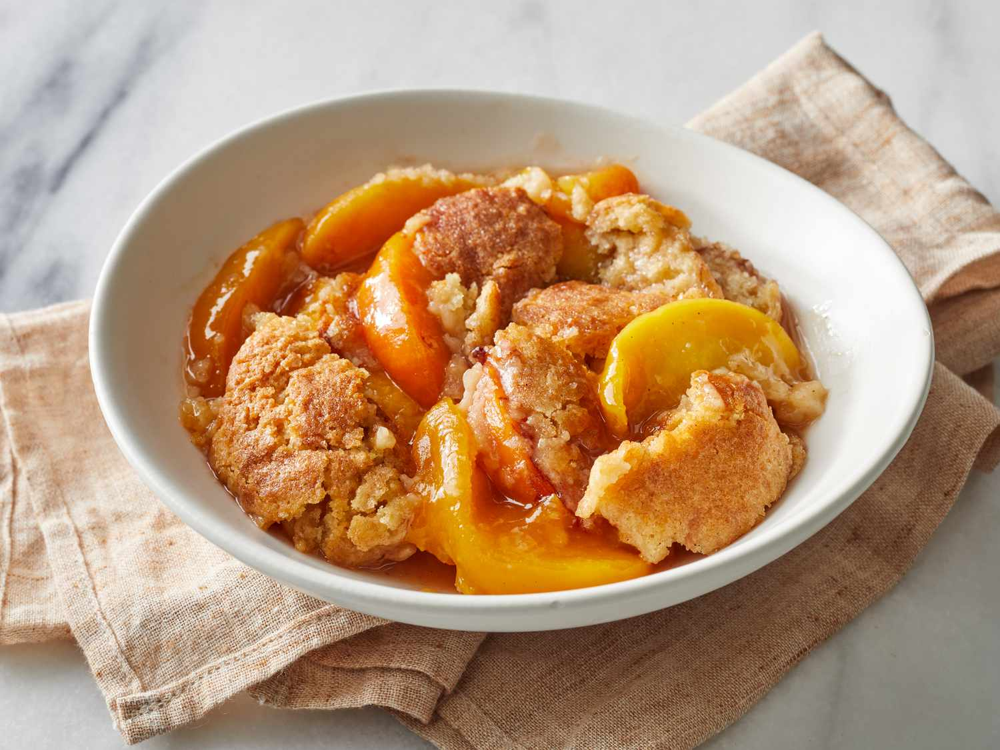

Crisp Peach Cobbler

Description
A peach cobbler recipe with a crispy top layer. A great recipe for the summer when peaches are ripe.
Ingredients
- 6 large peaches, cut into 8ths
- Juice from 1 lemon
- 2 cups (1 stick) unsalted butter, room temp
- 1 1/4 cup granulated white sugar
- 1 1/3 cups self-rising flour
- 1/3 cup rolled oats
- 3 cups whole milk
- For the top: 1/4 cup granulated white sugar and cold water spritzed generously over the top
Directions
- Set out the butter unitl room temperature
- Cut the peaches and add to a buttered baking dish along with lemon juice
- Combine and mix the butter and sugar
- Add the flour,rolled oats and milk
- Pour the batter on top of the peaches
- Bake at 375 F for about 45 minutes, or until browned and crispy.